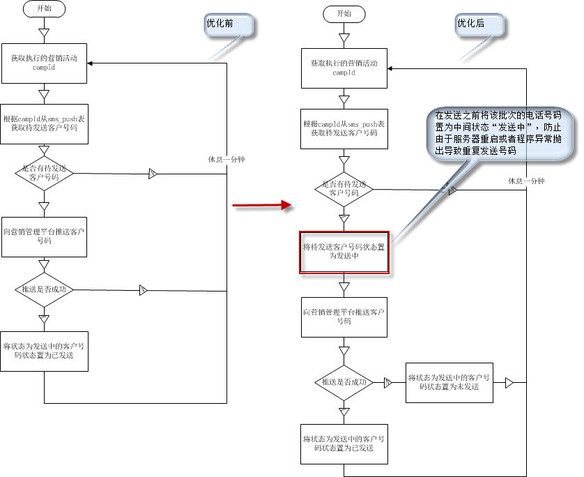

营销号码发送流程优化
客户报障:在漫游信令营销电话号码发送过程中，接到移动客户投诉:有重复电话号码发送到客户
原因查证:通过查看后台日志,发送程序每隔10分钟左右报如下异常
com.ibm.db2.jcc.b.ni: [ibm][db2][jcc][102][10040] 非自动批处理出现故障。虽然已经提交了批处理，但是该批处理的某个成员至少发生了一个异常。
使用 getNextException() 来检索已经过批处理的特定元素的异常。
at com.ibm.db2.jcc.b.p.a(p.java:414)
at com.ibm.db2.jcc.b.ih.a(ih.java:2876)
at com.ibm.db2.jcc.b.ih.b(ih.java:2710)
at com.ibm.db2.jcc.b.ih.executeBatch(ih.java:1554)
at org.apache.tomcat.dbcp.dbcp.DelegatingStatement.executeBatch(DelegatingStatement.java:297)
at com.asiainfo.market.service.impl.PostCampsegUserThread.sendCampsegUser(PostCampsegUserThread.java:115)
at com.asiainfo.market.service.impl.PostCampsegUserThread.call(PostCampsegUserThread.java:48)
at java.util.concurrent.FutureTask$Sync.innerRun(FutureTask.java:315)
at java.util.concurrent.FutureTask.run(FutureTask.java:150)
at java.util.concurrent.ThreadPoolExecutor$Worker.runTask(ThreadPoolExecutor.java:898)
at java.util.concurrent.ThreadPoolExecutor$Worker.run(ThreadPoolExecutor.java:920)
at java.lang.Thread.run(Thread.java:736)
[ibm][db2][jcc][102][10040] 非自动批处理出现故障。虽然已经提交了批处理，但是该批处理的某个成员至少发生了一个异常。
使用 getNextException() 来检索已经过批处理的特定元素的异常。
仔细分析日志发现是由于将电话号码成功发送给营销管理平台之后,更新电话号码的为已发送状态的批处理语句报异常，导致下次
发送前该批次的号码再次取出来发送给营销管理平台,进而导致重复发送
异常分析:该异常的出现大致有3个原因:
1).后台表结构字段与实际传入的字段的长度不一致.由于是update批处理,所以该情况不可能.
2).插入的数据违反唯一键索引.由于主键是通过数据库自动加1,所以该情况不可能.
3).数据库存储空间异常,由于没有办法查看数据库的日志,只能暂时判断为该原因.
优化方案:
1).在发送前将该批次的电话号码置为中间状态"发送中",如果成功推送给营销管理平台，则置为发送成功.如果发送失败,则置为未发送(见截图).
2).将每一批次的电话号码由原来的2000调整成现在的1000.
